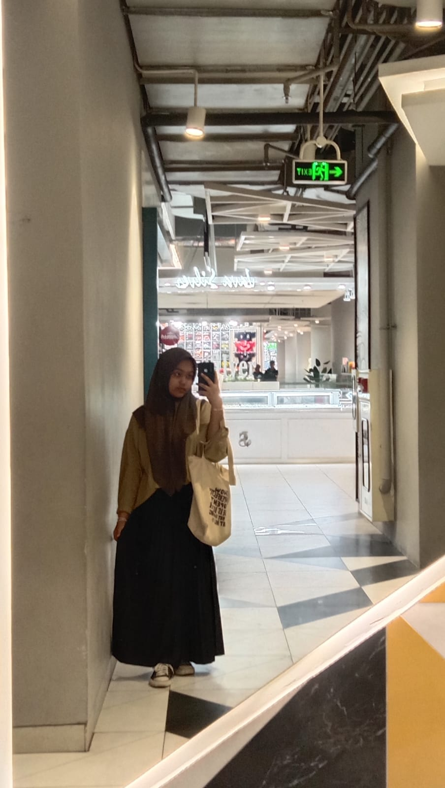
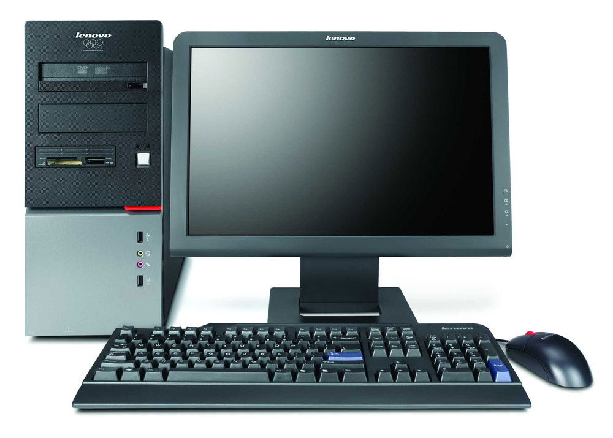

Nama: Nayla Meifana Putri
NIM: 607012300132
Kelas: D3SI4705
Ini adalah komputer
Nama Alat Komputer
- Router: Perangkat jaringan yang meneruskan paket data antara jaringan komputer.
- Switch: Perangkat jaringan yang menghubungkan perangkat dalam satu jaringan.
- Modem: Perangkat yang mengubah sinyal digital menjadi sinyal analog dan sebaliknya untuk akses internet.
- Access Point: Perangkat yang memungkinkan perangkat nirkabel untuk terhubung ke jaringan kabel.
- Firewall: Sistem keamanan yang memantau dan mengontrol lalu lintas jaringan masuk dan keluar.
Jenis Komputer
- PC (Personal Computer): Komputer yang dirancang untuk penggunaan pribadi.
- Workstation: Komputer yang dirancang untuk aplikasi teknis atau ilmiah.
- Server: Komputer yang menyediakan layanan kepada komputer lain dalam jaringan.
- Laptop: Komputer portabel yang bisa dibawa ke mana-mana.
- Tablet: Komputer portabel dengan layar sentuh.
Tutorial Hosting
Tutorial hosting, ada pada file pdf berikut: TUBES ARSIJARKOM_NAYLA.PDF